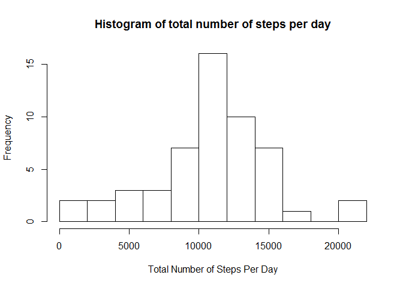
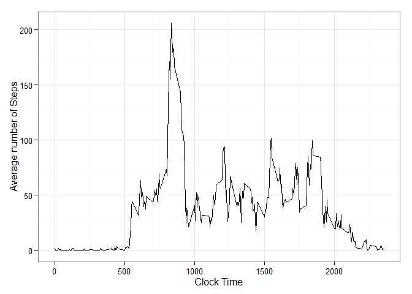
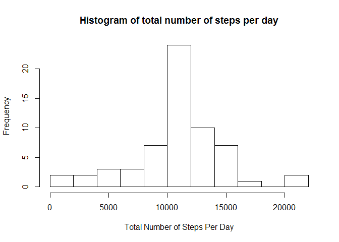
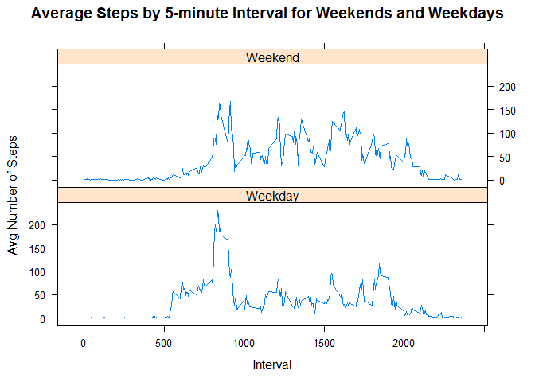

This is an R Markdown document that will be used for the Coursera peer assignment #1. The data used in this assignment is taken from data about personal movement using activity monitoring devices such as Fitbit, Nike Fuelband and Jawbone Up. The dataset can be downloaded from the course website
Data: Activity Monitoring Data.
The variables included in this dataset are:
The dataset is stored in a comma-separated-value (CSV) file and there are a total of 17,568 observations in this dataset.
Set the global items like the necessary packages, and the echo=TRUE option so that the code chunks may be observed.
library(knitr)## Warning: package 'knitr' was built under R version 3.2.1library(ggplot2)## Warning: package 'ggplot2' was built under R version 3.2.1library(dplyr)##
## Attaching package: 'dplyr'
##
## The following object is masked from 'package:stats':
##
## filter
##
## The following objects are masked from 'package:base':
##
## intersect, setdiff, setequal, unionlibrary(lattice)
opts_chunk$set(echo = TRUE)#data download website
url<-"http://d396qusza40orc.cloudfront.net/repdata%2Fdata%2Factivity.zip"
download.file(url, "activity.zip", mode="wb")
unzip("activity.zip")
#read in csv data
rawdata<-read.csv("activity.csv", header=TRUE, colClasses=c("numeric", "character", "numeric"))
rawdata$date <- as.Date(rawdata$date, format = "%Y-%m-%d")#calculate the total number of steps per day
totalsteps<-aggregate(steps~date,rawdata, sum)
hist(totalsteps$steps, breaks=10, xlab="Total Number of Steps Per Day", main="Histogram of total number of steps per day")
#calculate the mean of total steps per day
meantotalsteps=mean(totalsteps$steps)
meantotalsteps## [1] 10766.19#calculate the median of total steps per day
mediantotalsteps=median(totalsteps$steps)
mediantotalsteps## [1] 10765#calculate the average number of steps per interval
avgsteps<-aggregate(steps~interval,rawdata, mean)
#data is already aggregated to a time series, 0=12:00am, 2355=11:55pm in 5 min increments
ggplot(data=avgsteps, aes(x=interval, y=steps)) + geom_line()+ theme_bw() + xlab("Clock Time") + ylab("Average number of Steps")
#calculate the timestep for which the max # of avg steps per day occurs
maxstep=avgsteps[which.max(avgsteps$steps),1]
maxstep## [1] 835maxcount=avgsteps[which.max(avgsteps$steps),2]
maxcount## [1] 206.1698missingval<-sum(is.na(rawdata$steps))
missingval## [1] 2304#need to have distinct variable name to perform the merge using interval as the index
colnames(avgsteps)[2]="avg_steps"
#first merge the two data sets using interval as the merge index
mergeddata<-merge(rawdata, avgsteps, by="interval")
#now replace the NA's with the 'avg step' data
mergeddata$steps <- ifelse(is.na(mergeddata$steps), mergeddata$avg_steps, mergeddata$steps)#next, aggregate the data per day as a sum
totalsteps<-aggregate(steps~date,mergeddata, sum)
#next plot the new histogram of the NA-replaced data
hist(totalsteps$steps, breaks=10, xlab="Total Number of Steps Per Day", main="Histogram of total number of steps per day")
#compute the mean
newmean=mean(totalsteps$steps)
newmean## [1] 10766.19#compute the median
newmedian=median(totalsteps$steps)
newmedian## [1] 10766.19#make a new column that will call out weekdays
mergeddata$day <- weekdays(as.Date(mergeddata$date))
#make the days a factor for weekends and weekdays
mergeddata$day <- ifelse(mergeddata$day %in% c("Saturday","Sunday"), "Weekend","Weekday")#Calculate the average steps by weekday/weekend
activity_impute_mean <- mergeddata %>% group_by(day, interval) %>%
summarize(mean.steps = mean(steps))
#plot the time series chart
xyplot(mean.steps ~ interval | day, data = activity_impute_mean,
type = "l", layout = c(1,2), xlab = "Interval", ylab = "Avg Number of Steps",
main = "Average Steps by 5-minute Interval for Weekends and Weekdays")